Overview
Sections
Geometry Caches in CRYENGINE allow the storing and playback of arbitrary animated geometry (similar to a video).
Some use-cases are: complex destruction animations, complicated cloth motion or special effects that cannot be achieved with CRYENGINE's particle system.
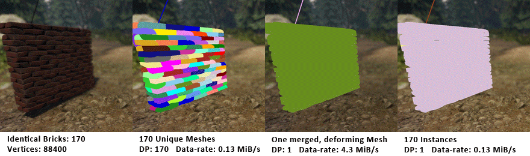
Features and Limitations
Features
- Imports standard Alembic files:
- Animated transform hierarchies (i.e. fragmenting objects).
- Deforming meshes with constant topology (i.e. cloth, characters).
- Animated visibility.
- Animated vertex colors.
- Automatic detection of geometry instances.
- Physics Proxies.
Limitations
- Not all Alembic features are supported:
- No meshes with changing topology (i.e. fluid caches, DMM):
- Deforming meshes can be compressed well, since their vertices just move around.
Meshes with changing topology would require storing the entire mesh per frame, this would be far too much data to stream in real-time.
Also, velocity data would need to be added to every frame, which many Alembic pipelines do not handle well.
- Deforming meshes can be compressed well, since their vertices just move around.
- No curves.
- No subdivision surfaces.
- No camera, lights, etc.
- No meshes with changing topology (i.e. fluid caches, DMM):
- No reverse-playback or fast-forward:
- The animation is streamed in (similar to a Youtube video), so jumping around in time will introduce a delay in the animation.
Filetypes
- *.abc - This is the native Alembic format that you can export from various DCC tools.
- *.cbc - This is a settings file which stores the parameters which were used to convert the Alembic file.
- *.cax - This file is the processed Alembic file which the RC has compressed into an Engine friendly format.
The format is subject to change with future Engine updates and is not backwards-compatible!
Keep your *.abc and *.cbc just like you would keep your *.tif files.
See the Batch Conversion section for information on how to update all *.cax files at the same time.
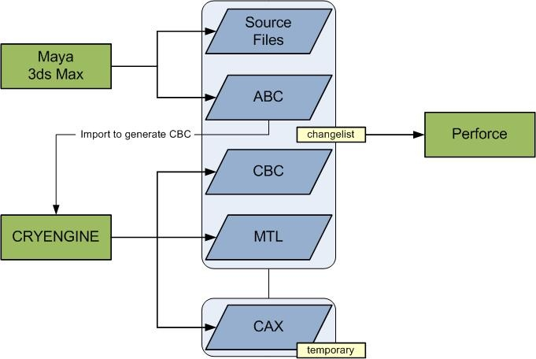
Creating GeomCache Assets
General
Alembic is a very flexible format that is designed to be extensible for almost any conceivable custom pipeline.
As such, many 3D applications export Alembic slightly differently, this makes it tricky to import caches from different sources.
For this reason, some guidelines need to be followed when creating Alembic caches for GeomCaches:
- Polycount - generally shouldn't exceed what's reasonable for regular assets. There may be no more than 65.536 vertices/triangles per node.
- Data-rate - shouldn't exceed 10 MB/s for all GeomCaches running concurrently - see Optimization section below for more information.
- UV Coordinates - GeomCache importer only loads the first UV-channel - all other channels will be ignored.
- Vertex Colors - GeomCache importer only loads the first Vertex color-channel - all other channels will be ignored.
Material IDs
CRYENGINE requires per-face material assignment so that it can set sub-materials to geometry.
Alembic can export this information as face-sets (aka ShadingEngines or ShadingGroups in Maya).
The importer will look for the first integer number in such a face-set name and use it as the material ID.
So, generally it is good practice to name your materials like this:
- mat01_wall
- mat02_door
- mat03_etc.
It's recommended to avoid using lambert1!
Physics Proxies
You can create animated or passive physics proxies by including one of the strings in the name of the mesh... see the following list. The surface-type is derived from the assigned material. Note: Physics proxies will not be rendered.
- CryPhys_box - box proxy. Supports non-uniform scale.
- CryPhys_sphere - sphere proxy. Supports uniform scale.
- CryPhys_capsule - capsule proxy. Supports uniform scale.
- CryPhys_cylinder - cylinder proxy. Supports uniform scale.
- CryPhys_mesh - arbitrary mesh. Supports non-uniform scale.
Please refer to the manual pages in regards to setting any User Defined Properties (UDPs) for CRYENGINE physics proxies in Maya or 3ds Max
Alembic Export from Maya
We use the built-in Maya 2016 Alembic Exporter and the "CryAbc" script from the Crytek shelf.
Make sure that you have installed the Maya Alembic export plugin: from Maya's Main Menu bar -> Windows -> Settings/Preferences -> Plug-In Manager, tick the "Loaded" and "Auto-load" checkbox for the "AbcExport.mll".
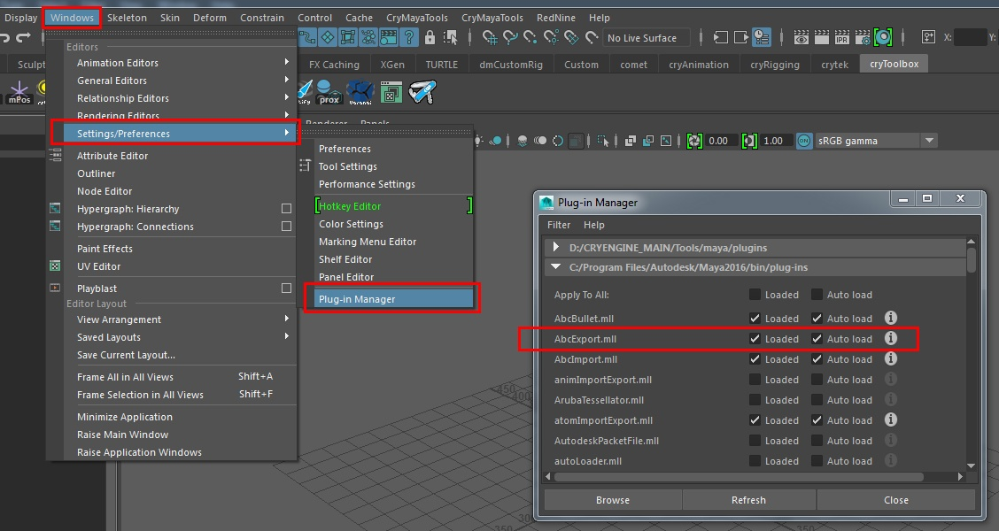
1. Run the AbcMat script (inside the Crytek Shelf) to prepare your scene for export. This script slightly modifies your scene to work around some limitations in Maya's Alembic exporter.
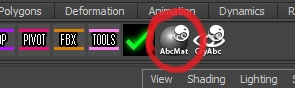
2. Now bring up the Maya Alembic exporter GUI.
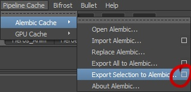
3. Under the advanced Options, (scroll to the bottom) and make sure to have the essential flags enabled - as in the picture below.
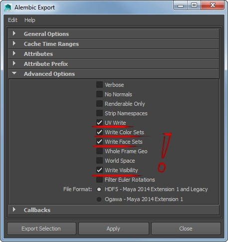
After you have set the options in step 3. Do not use the "Alembic Export" Options window -> "Export Selection" (or "Export All" ) buttons at the bottom! Otherwise you will loose the material IDs you have set and end up with just ONE material ID for your Alembic asset.
Once you have set these flags, click the close button and go to the Crytek Exporter!
4. Just select the mesh nodes that you wish to export and click the "CryAbc" shelf button. A file dialog will pop up and ask you to set the file location and file name for the Alembic file.
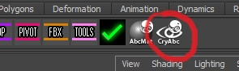
Alembic Export from 3ds Max
Beginning with version 2016, 3ds Max officially features an Alembic exporter. However, it will not export deforming meshes that are readable for CRYENGINE, rather only "rigid bodies" with animated transforms. Therefore, if you want deforming meshes, for e.g. cloth objects, blendshape animations, etc..., then you must export to an Alembic file from 3ds Max 2016. To do this, re-import the *.abc file into Maya. Then set the materials as per the Maya Alembic (according to the CRYENGINE workflow) and get the scene exported with CryAbc using the Alembic exporter that is available from the crytek shelf. (Follow the guide section above)
Batch Conversion
Running the resource compiler from the command line allows for batch conversion of multiple *.abc files in a row.
This can be useful for automatic asset builds or manually updating all *.cax files after installing a new Engine version.
Here's an example for using the resource compiler via the command line to convert all *.abc files in the SDK:
rc.exe /refresh /threads *.abc
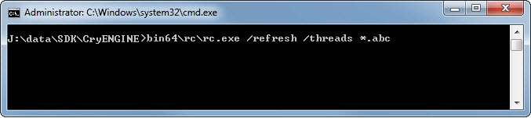
Using GeomCaches in Sandbox
Importing
The import process is straight forward:
Drag&drop your alembic (.abc) file into the Asset Browser to create a Geometry Cache asset.
The asset will be imported with default settings, which can be changed later in the relevant Asset Editor.
Holding Ctrl while dragging & dropping opens the importing dialog:
Editing
Double click on the asset to edit.
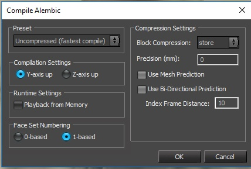
These settings do the following:
| Setting | Description |
|---|---|
Y/Z-axis up | Set this according to which axis is up in your source file. |
Playback from Memory | Will load the entire cache into memory (instead of streaming it). Useful for small, looping caches. |
Face Set Numbering |
|
Block Compression | Lossless compression for the entire file.
|
| Precision | Lossy compression of vertex positions. Higher values = smaller file, but more jittering. |
| Use Mesh Prediction | Lossless compression of mesh-data. Disable to quickly compile complex caches for testing. |
| Use Bi-Directional Prediction | Lossless compression of motion-data. Disable to quickly compile complex caches for testing. |
| Index Frame Distance | Interval at which to place key-frames. Larger/smaller can improve compression for some caches. |
Entity Setup
The entity itself can be used, similar to an AnimObject in Trackview and Flow Graph.
The properties in detail:
- File - GeomCache file for this entity. Load an *.abc to recompile.
- FirstFrameStandIn - CGF to be displayed before the cache animation was triggered. Leave blank to always show cache.
- FirstFrameStandInMaterial - material for the first frame CGF.
- LastFrameStandIn - CGF to be displayed after the cache animation has finished. Leave blank to always show cache.
- LastFrameStandInMaterial - material for the last frame CGF.
- Looping - if enabled the animation will loop.
- Playing - if enabled the animation will be playing.
- StandIn - CGF to be displayed while the cache animation is playing. Leave blank to always show cache.
- StandInDistance - when the camera is further away than this distance, stand-in CGFs will be displayed.
- StandInMaterial - material for the stand-in CGF.
- StartTime - time at which to start playing the cache animation.
- StreamInDistance - when the camera is within this range, the pre-caching will start. Leaving the range will discard the cache data. Should be significantly larger than StandInDistance.
With the appropriate settings, the entity can be used as a looping animated prop without extra game logic.
Here's an example of an independent GeomCache prop from Ryse that loads and unloads as the player moves closer to or further away from:
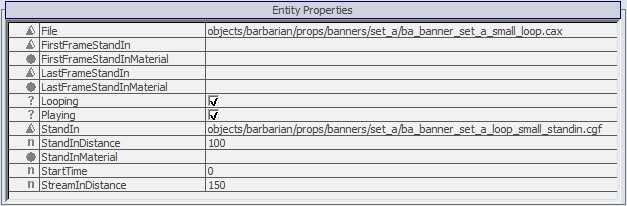
Optimization
Streaming
Since complex GeomCaches are too large to be fully pre-loaded, their animation data is streamed a few seconds before being played.
Smaller GeomCaches can be completely loaded into memory by enabling the "playback from memory" flag on import.
Because of this it is important to keep an eye on the data-rate of individual caches and the combined amount of GeomCache data currently in memory.
These values have been used for Ryse on XboxOne:
- Max. combined data-rate: 10 MB/s
- GeomCache buffer size: 128 MB
- Max. playback from memory size: 16 MB
Note, that this will also negatively affect loading-times.
Rendering
Most of the time working with GeomCaches comes down to a trade-off between draw-calls and data-rate.
Using many non-deforming meshes with animated transforms results in a low data-rate, but high draw-call numbers and vice-versa.
Some techniques to help GeomCaches perform well are:
- Instances - when using many identical, non-deforming objects ensure that they are instanced in your DCC tool, this will help to save drawcalls.
- Visibility - when an object moves out of the player's sight (e.g. underground) animate its visibility to off. This will prevent it from rendering and also remove unnecessary animation data.
- Merging - when working with many low-poly non-deforming objects, merging them into a single deforming mesh can help to significantly reduce draw-calls (albeit at the cost of some data-rate). This technique was used for the siege-tower in Ryse.
- LODs - stand-in CGFs can have LODs like any regular CGF. This way the polycount at a distance can be kept very low and the full GeomCache is only rendered when the camera is close enough.
This sequence illustrates how different techniques affect draw-calls and data-rate using "e_GeomCacheDebugDrawMode 3" to color instances:
Profiling
The overall memory consumption and streaming performance of all active GeomCaches can be profiled using "e_GeomCacheDebug 1".
Individual GeomCaches can be profiled with the mesh statistics overlay.
This is how the individual values affect performance:
- Playback from Disk/Memory - whether this GeomCache is streamed or completely loaded into memory.
- Average Animation Data Rate - high values can lead to animation stuttering.
- Animated/Static Tris/Verts - as with regular geometry, more triangles/vertices = slower rendering.
- Animated/Static Meshes - the number of individual meshes (unless instanced) directly translates into draw-calls. Meshes with multiple sub-materials cost multiple draw-calls.
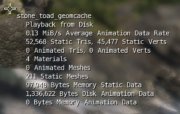
The Statistics Overlay can be enabled in the preferences:
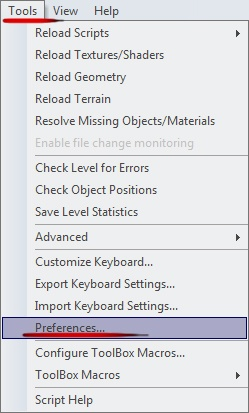
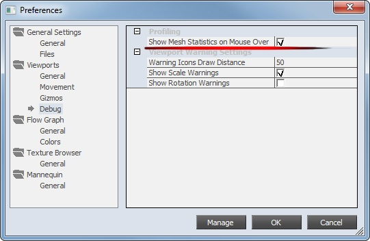
Debugging & Troubleshooting
Common Issues and Solutions
Issue | Possible Solutions |
|---|---|
| GeomCache won't play |
|
| Animation stutters/skips frames |
|
| UVs or vertex colors look wrong |
|
| Material IDs look wrong |
|
Console Commands
e_GeomCacheDebug - displays GeomCache streaming debug information. Avoid having a full streaming buffer, since it will lead to animation stalls: 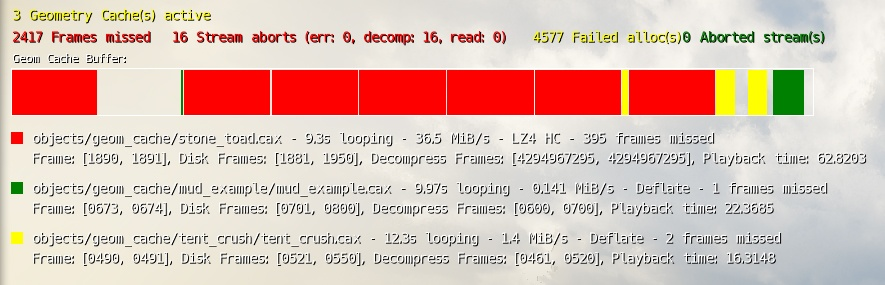
e_GeomCacheDebugFilter - show debug info only caches with this string in its name.
e_GeomCacheDebugDrawMode - debug draw to identify static geometry, deforming geometry and instances:
- 1 - draw only deforming meshes.
- 2 - draw only static meshes.
- 3 - meshes with the same color are rendered as instances.